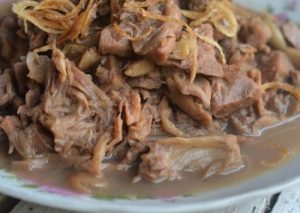
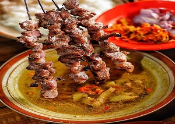

 gudek basah gudek basah makanan dari nangka muda gudek merupakan makanan iconic yogya berasal dari nangka dan santan yang sangat kental .
 sate klatak sate klatak sate dengan kuah gulai sate kambing dibakar tanpa kecap hanya bawang puatih dan garam, disertai kuah dari masakan gulai